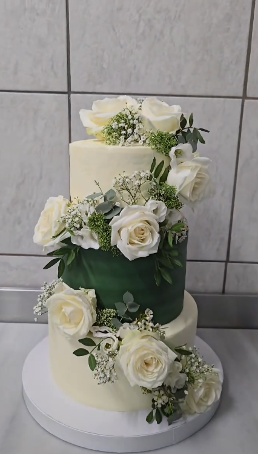
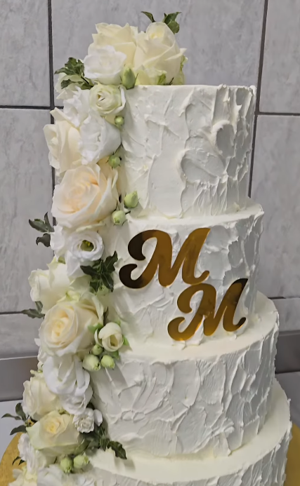
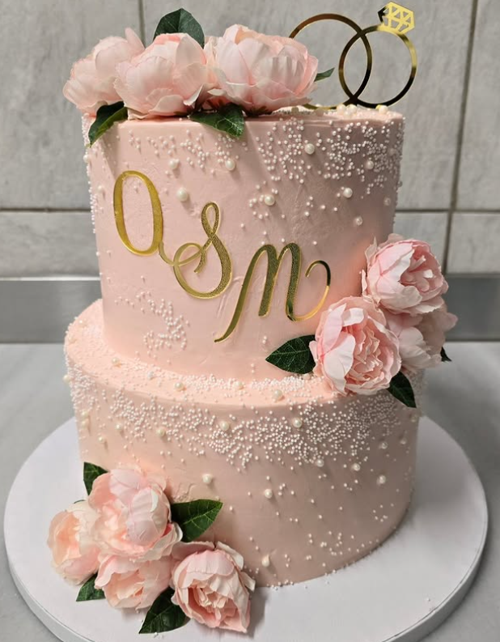

The Vitrine
Ce Matin





Our selection changes every morning. Follow @loannabakerypatisserie for today’s vitrine.
Loanna grew up in Athens, in a family where the kitchen was the center of everything. Her grandmother made phyllo by hand on Sunday mornings; her mother kept a jar of honey on every table. She studied pastry in Thessaloniki, then spent years working in professional kitchens across Europe — learning lamination in Lyon, sugar work in Vienna, the patience that only comes from doing the same thing five hundred times until it’s right.
She chose Leipzig because it was real. Not fashionable, not saturated, not performing. A city that still had space for something genuine. She opened Loanna with a single rule: nothing leaves the kitchen that isn’t right.
Every morning starts before dawn. The croissants are laminated by hand. The cakes are assembled like architecture. The rest is in the taste.



Our selection changes every morning. Follow @loannabakerypatisserie for today’s vitrine.
“Die Konditorei überzeugt mit unglaublich leckeren, handwerklich perfekt gemachten Kuchen und Torten. Alles schmeckt frisch, hochwertig und mit viel Liebe zum Detail.”
Ioanna
“Superleckere Kuchen und Torten, alles frisch und mit viel Liebe gemacht. Gemütliche Atmosphäre — komme definitiv wieder.”
Alexios
“Super liebes Familiencafé. Die Kuchen schmecken sehr lecker — und es gibt leider so viel Auswahl.”
Larissa